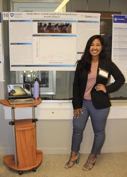
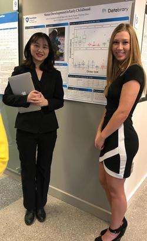
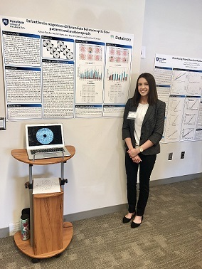
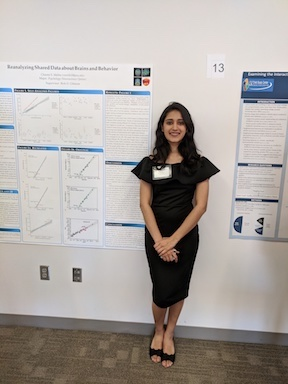

Rick Gilmore’s Lab @ Penn State
The Gilmore Lab in the Psychology Department at Penn State studies the development of perception, action, and memory. Our goal is to understand patterns of brain and behavioral change in infants, children, and young adults. We use behavioral, EEG, MRI, and computational modeling methods in our research. We also advocate for and try to demonstrate open science practices in our work.
Contact Information
Dr. Rick Gilmore, Professor of Psychology, (rogilmore@psu.edu; 814-865-3664; 114 Moore Building) directs the lab.
Andrea Seisler is the Lab Manager.
For Students
The lab employs an active and engaged group of undergraduate and graduate research assistants. If you are a Penn State undergraduate student and wish to be considered for a position in the lab, complete an online application here. for Fall 2023 we are accepting students that can be with the lab for MORE than one year
If you are a prospective graduate student, contact Dr. Gilmore by email. For more information about current students and alumni, see the student page.
For Parents
Much of our research involves testing infants and young children. To sign-up for a study or learn more about what a visit entails please follow this link.
News
PSI CHI RESEARCH CONFERENCE!
Congratulations to our Undergraduate Research Assistants for presenting their posters during the annual Psi Chi Research Conference!
Psi Chi 2019 Presenters
Sarah Shahriar presented her poster On the move: A study on gait style and preference in early infancy

Zhichun Zhao and Ashton Dluzneski presented the poster they worked on with Sandy Rayes: Motor Development in Early Childhood.

Psi Chi 2018 Presenters
Alyssa Pandos presented her poster Infant brain responses differentiate between optic flow patterns and motion speeds.
2nd Place Empirical Research Category

Charmi Mehta presented her poster Reanalyzing Shared Data about Brains and Behavior.
DataCamp
Most students who work as research assistants in the lab do so for PSY 494 course credit.
This class is supported by DataCamp, an intuitive learning platform for data science. Learn R, Python and SQL the way you learn best through a combination of short expert videos and hands-on-the-keyboard exercises. Take over 100+ courses by expert instructors on topics such as importing data, data visualization or machine learning and learn faster through immediate and personalised feedback on every exercise.